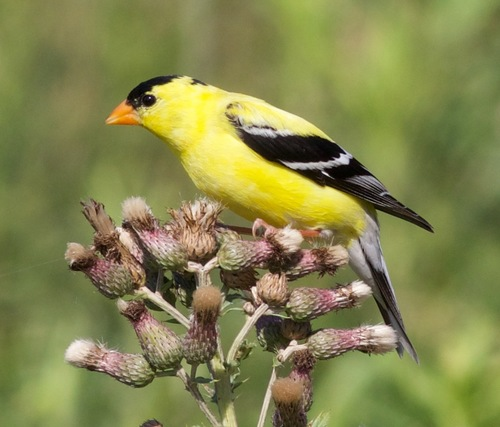

American Goldfinch
Spinus tristis bird

Bright yellow seed-eating finch. Heavily dependent on Asteraceae seed (sunflower, thistle, goldenrod, aster).
17 documented plant relationships, 1 of them as a specialist with no alternative.
eats seed of
 Douglas Goldman, some rights reserved (CC BY-SA), uploaded by Douglas Goldman") Canada GoldenrodSolidago canadensis
Canada GoldenrodSolidago canadensis Tom Pollard, some rights reserved (CC BY), uploaded by Tom Pollard") Evening PrimroseOenothera biennis
Evening PrimroseOenothera biennis Tero Laakso, some rights reserved (CC BY-SA)") Jerusalem ArtichokeHelianthus tuberosus
Jerusalem ArtichokeHelianthus tuberosus Andreas Stiller, some rights reserved (CC BY), uploaded by Andreas Stiller") Late GoldenrodSolidago giganteaMaximilian SunflowerHelianthus maximiliani
Late GoldenrodSolidago giganteaMaximilian SunflowerHelianthus maximiliani Bob Nieman, some rights reserved (CC BY), uploaded by Bob Nieman") Nuttall's SunflowerHelianthus nuttalliiPrairie GoldenrodSolidago missouriensisPrairie Thistle ★Cirsium flodmaniiShowy AsterEurybia conspicua
Nuttall's SunflowerHelianthus nuttalliiPrairie GoldenrodSolidago missouriensisPrairie Thistle ★Cirsium flodmaniiShowy AsterEurybia conspicua aarongunnar, some rights reserved (CC BY), uploaded by aarongunnar") Smooth AsterSymphyotrichum laeve
Smooth AsterSymphyotrichum laeve Matt Lavin, some rights reserved (CC BY-SA)") Stiff GoldenrodSolidago rigidaStiff Sunflower (Rhombic-leaved Sunflower)Helianthus pauciflorus
Stiff GoldenrodSolidago rigidaStiff Sunflower (Rhombic-leaved Sunflower)Helianthus pauciflorus Sandy Wolkenberg, some rights reserved (CC BY), uploaded by Sandy Wolkenberg") Tall GoldenrodSolidago altissima
Tall GoldenrodSolidago altissima Hladac, some rights reserved (CC BY-SA)") Thinleaf AlderAlnus incana
Thinleaf AlderAlnus incana Douglas Goldman, some rights reserved (CC BY-SA), uploaded by Douglas Goldman") White SprucePicea glauca
White SprucePicea glauca tzeducation, some rights reserved (CC BY), uploaded by tzeducation") Wild BergamotMonarda fistulosa
Wild BergamotMonarda fistulosa Joshua Mayer, some rights reserved (CC BY-SA)") Yellow AvensGeum aleppicum
Yellow AvensGeum aleppicum